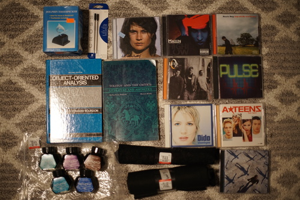
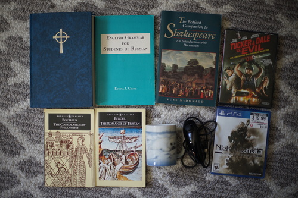
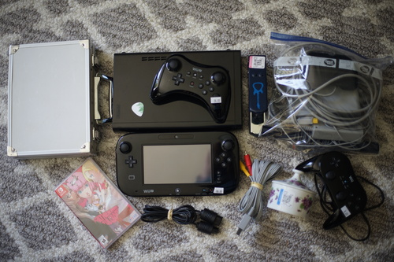

I'm not done, but I finally hit the credits in Pokemon Arceus. I've been calling it Arkeous but I've heard other call it Arseus? Ark-phone? Arse-phone?? Anyway, the game is good and a lot of fun and they gave us two great boys, Volo and Adaman. I'm very happy with how much time they let me spend with Adaman!!! He's so cute~

I have just discovered I don't like Adam Ant.
RED ALERT!! I JUST FOUND OUT THERE'S A HUMAN LEAGUE COVER OF KIMI NI MUNE KYUN AND IT'S NOT ON THIS DISC
They're size 5, but I can get my foot in them, unlike my size 6 1460s (when they were brand new), so I think they'll stretch out a little and work.
They have at least one good song. Not sure if I want to count higher.
underwhelming
For Ryan's aeropress activities.
he'll yeah. pogs included
In the land of expensive CDs...
This thing is awesome! Whoever picks it during white elephant will surely be delighted
Bought at a different thrift store where prices were better. Reminds me a little of Imogen Heap.
Ryan's.
I wanted it, but it's Ryan's. I'm about the jump down the rabbit hole for "She Says"
Ryan's. ooa ooa oooa oooa ooa
Ryan's.
Ryan didn't hand this one to me despite seeing it?! Girl on TV is so good.
Ryan's. 2 discs including SCATMAN JOHN?!!!!
Ryan's.
Ryan proudly handed me this awesome find! He can't understand why I like A-Teens more than ABBA. They finally let the boys (half the group) sing in this one.
They're all pretty full. Looks like one may have been used once. Havana (brown), green, purple, south sea blue, Florida blue.
Ryan's. I wasn't impressed with last Muse album I bought, but this one does have a song that was on a mix CD I owned many years ago.
Do I even need to note that most of this isn't mine? idk how to read.
I'm a big fan of these dudes!
"Let's get out of here before we find any more baby seals" -Ryan, 2024
This is the 4th copy we've bought. Ryan gave it to his dad for his birthday.
And finally... we went to Gamer's Tavern. The owner said video games were 20% off. So I did it. I bought a Wii U. I've been wanting to for a while, but was hesitating dropping money on it. I don't think I'll be lucky enough to find a thrift store one, so this is probably the best deal I'll find. Time to make a Wii U game wishlist. A few things were also at goodwill next door.
We went back a bit later and got a couple more things that were not pictured. If you are very upset at nofoto, please send me an email and tell me "pix or it didnt happen".
Also a few more cards at Gamer's Tavern. Ryan and I went looking for Adaman, but found Volo instead. Volo is pretty pretty good though so I'm happy. There were so many cards I wanted but I held back! Top row is mine, bottom is Ryan's.

I'll call it quits here for now... coming up soon: scary Hina goes outside and aurorafoto.